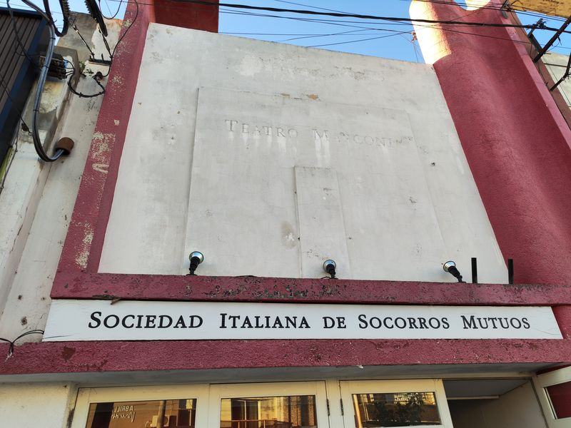
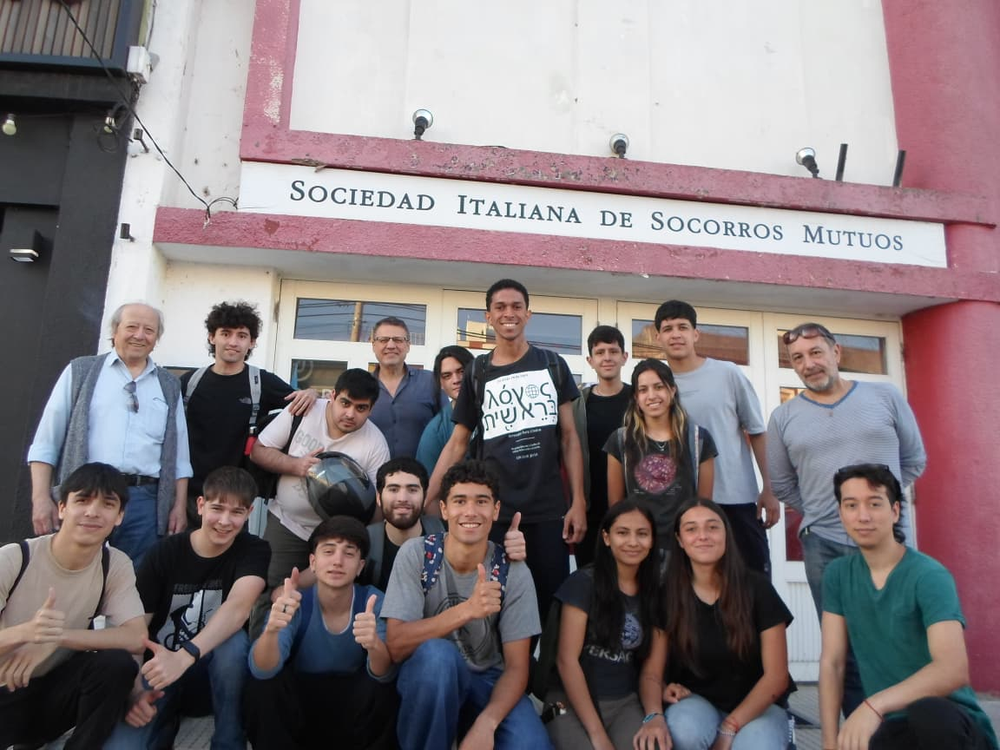
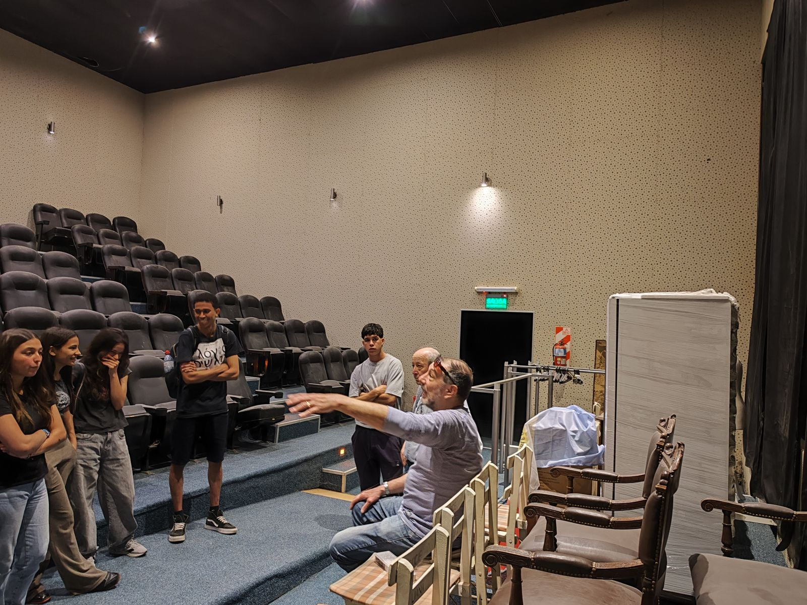
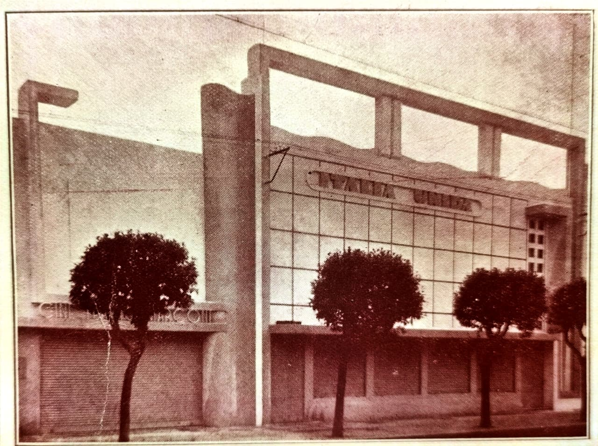
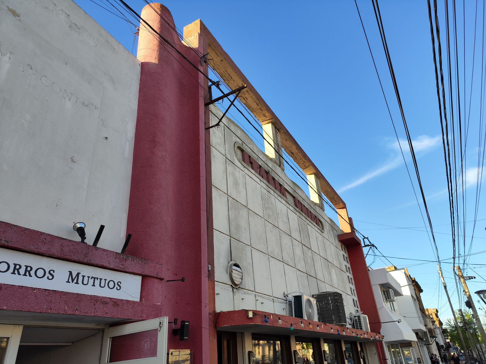

Nuestra historia
De la memoria al renacer.
La Sociedad Italiana de Socorros Mutuos de Gálvez nació del esfuerzo de inmigrantes que, lejos de su tierra, decidieron cuidarse unos a otros. Esta es la historia de sus comienzos, de sus años de esplendor, de los tiempos difíciles y de la recuperación que hoy le devuelve la vida.
Etapa 01Los inicios
Lejos de casa, juntos.
A fines del siglo XIX, Gálvez nacía junto a la estación del ferrocarril, y entre sus primeros vecinos había numerosas familias llegadas desde Italia.
Lejos de su tierra, sin redes que los protegieran ante la enfermedad, la falta de trabajo o la muerte, los inmigrantes italianos encontraron una respuesta en la ayuda mutua. En toda la provincia de Santa Fe fundaron sociedades de socorros mutuos para sostenerse entre sí y mantener vivas su lengua y sus costumbres.
En Gálvez, esa misma voluntad dio origen a la Sociedad Italiana de Socorros Mutuos.
Según su estatuto, la Sociedad fue fundada el 9 de enero de 1910. Su primer libro de actas empieza ese día con el nombre «Società Italiana di Mutuo Soccorso Artieri ed Agricoltori»: los socios destituyeron al consejo que presidía Amilcar Frittoli y eligieron una comisión provisoria encabezada por Carlos Dubini.5
Las primeras reuniones se hicieron en la casa de Rafael Cerrito y las asambleas, en el salón de la Sociedad Recreativa Obrera. El 14 de febrero de 1910 quedó constituido el Consejo Directivo definitivo, presidido por Carlos Falabrini.5
En 1916 las actas ya llevan el nombre «Italia Unida», y el 9 de junio de 1922 la Sociedad obtuvo su personería jurídica.5
-
1886
El 15 de octubre se aprueba el trazado del «Pueblo Estación Gálvez», origen de la actual ciudad.1, 2
-
1887
El censo provincial registra numerosos vecinos nacidos en Italia en el distrito Colonia Gálvez.3
-
60
localidades santafesinas, sin contar las ciudades más grandes, fundaron sociedades italianas de socorros mutuos entre 1859 y 1920.4
Etapa 02El crecimiento
Una casa para todos.
Con el paso de los años, la Sociedad fue mucho más que un sistema de ayuda: se transformó en un punto de encuentro.
Sus actividades se consolidaron y su presencia empezó a formar parte de la vida social y cultural de Gálvez. Cada socio que se sumaba aportaba algo más que una cuota: aportaba confianza en un proyecto común.
En 1916 la Sociedad ya tenía su sede en la calle Humberto 1º, la actual Belgrano. En 1919 compró en remate una casa en esa misma calle y en 1923 adquirió a los hermanos Ferrero otra propiedad, también sobre Humberto 1º, para el edificio social.5
Los socios recibían atención médica y medicamentos, y en 1941 la Sociedad firmó con las sociedades Cosmopolita y Española de Socorros Mutuos un convenio con los médicos de Gálvez. Ese mismo año, cuando tenía 206 socios, empezó a aceptar a mujeres y niños.5
Etapa 03El apogeo
Los años de esplendor.
Hubo un tiempo en que la Sociedad Italiana fue protagonista de la vida de Gálvez.
Fue la etapa de mayor actividad y de mayor participación de la comunidad. La institución ocupaba un lugar central en la ciudad y su sede reunía a socios, familias y vecinos.
El 28 de septiembre de 1938 se colocó la piedra fundamental del edificio social, con su salón teatro, y el 5 de noviembre de 1939 se inauguró. La sala, que iba a llamarse «Cine Teatro Italia», abrió como «Cine Teatro Marconi», con 576 butacas.5
Cada año la Sociedad celebraba el XX de Septiembre y, desde 1953, embandera su edificio con las banderas de Italia y de la Argentina cada 4 de noviembre.5
Etapa 04El declive
Tiempos difíciles.
Como tantas instituciones nacidas de la inmigración, la Sociedad atravesó una etapa crítica.
La actividad fue disminuyendo y el edificio comenzó a sentir el paso del tiempo y la falta de uso. Fueron años silenciosos, pero no de olvido: la historia seguía allí, en sus paredes y en la memoria de quienes la habían vivido, esperando ser recuperada.
Las actas muestran que la cantidad de socios fue bajando: 206 en 1941, 150 en 1950 y 139 en 1966. Desde los años sesenta la sala se alquiló varias veces a la Municipalidad y, en los noventa, la Sociedad reclamaba alquileres impagos y denunciaba el deterioro del escenario.5
Aun así hubo nuevos impulsos: en 1987 empezaron las clases de cultura e idioma italiano, con 58 alumnos inscriptos; la escuela sumó un aula y una biblioteca, recibió subsidios del gobierno italiano y en 1990 tuvo sus primeros 20 egresados.5



Etapa 05El renacer
Volver a abrir las puertas.
La llegada de nuevas autoridades, en 2025, marcó un punto de inflexión.
Con trabajo y compromiso, la Sociedad recuperó su actividad institucional y volvió a mirar su patrimonio como un bien a cuidar. El renacer no fue solo administrativo: fue el reencuentro de una comunidad con una parte de su identidad.
Etapa 06La reconstrucción
El edificio vuelve a la vida.
La recuperación de las instalaciones devolvió al edificio su valor y su dignidad.
Cada obra fue una manera de honrar a quienes lo levantaron y de prepararlo para las generaciones que vienen. La transformación que muestran estas imágenes es también la de una institución que decidió seguir adelante.


Deslizá el control para comparar el frente de ayer y el de hoy.
EpílogoArchivo de la comunidad
Ayudanos a completar esta historia.
El archivo de la Sociedad es casi inexistente: muchas fotos y documentos de estos más de cien años están guardados en casas de Gálvez.
Si tenés alguno, compartilo con nosotros: lo digitalizamos y, con tu permiso, lo sumamos a esta página. Cada imagen ayuda a llenar los espacios que hoy están vacíos.
Qué buscamos
- Socios fundadores y primeras comisiones directivas (desde 1910).
- La primera sede, en calle Humberto 1º (hoy Belgrano).
- La piedra fundamental (1938) y la inauguración del edificio (1939).
- El Cine Teatro Marconi: funciones, programas y entradas.
- Las fiestas del XX de Septiembre y del 4 de Noviembre.
- La escuela de italiano (1987–1990).
- Carnés, recibos de cuota y otros documentos de socios.
- Historias de familias italianas que llegaron a Gálvez: pasaportes, cartas, fotos del viaje y de los primeros años.
Fuentes consultadas
- Williams Alcaraz, estudio sobre la historia de la iglesia de Gálvez (e-revistas de la Universidad Católica Argentina): aprobación del trazado del «Pueblo Estación Gálvez» el 15 de octubre de 1886. Ver documento
- Honorable Cámara de Diputados de la Nación, Orden del Día n.º 1083 (2016): 130.º aniversario de la fundación de Gálvez, el 15 de octubre. Ver documento
- Censo provincial de Santa Fe de 1887, distrito Colonia Gálvez (Archivo General de la Provincia de Santa Fe y CFI). Ver registros
- Revista Adversus, año XV, n.º 34 (2018), artículo sobre las asociaciones italianas en Argentina. Ver artículo
- Libros de Actas y de Actas de Asambleas de la Sociedad Italiana de Socorros Mutuos «Italia Unida» de Gálvez (1910–1996), revisados por la Sociedad entre enero y agosto de 2026.
Parte de los datos propios de la Sociedad proviene de sus libros de actas (fuente 5). El resto (fechas, nombres, obras y fotografías) se incorporará a partir de su archivo institucional.